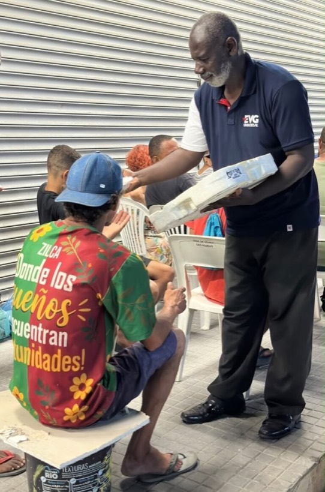
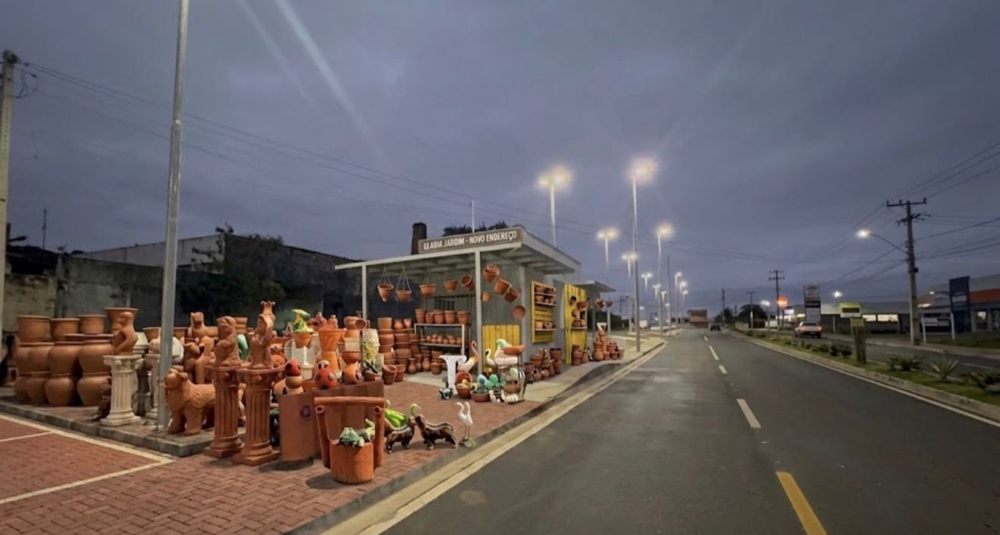

Caminhada Rosa acontece neste sábado em Itaboraí
Evento tradicional do Outubro Rosa reúne a população pela prevenção e pelo diagnóstico precoce do câncer de mama.
Ao vivo
Itaboraí, RJ
Jornalismo de rua feito em Itaboraí. O trânsito da BR-101, a passarela de Manilha, o Centro e os bairros, contados por quem está lá na hora.
32,9 mil pessoas acompanham pelo Instagram
Evento tradicional do Outubro Rosa reúne a população pela prevenção e pelo diagnóstico precoce do câncer de mama.


São 3.691 publicações no Instagram. Os boletins mais recentes, direto da rua.
Da passarela de Manilha ao Centro, os últimos pontos por onde a Itaboraí TV passou.
Boa parte das notícias da cidade chega pelo WhatsApp de quem mora aqui. A equipe confere antes de publicar.
Anderson Pedrinha é repórter e jornalista pós-graduado. Criou a Itaboraí TV para contar o que acontece na cidade do jeito que se conversa na rua: simples, direto e perto de quem mora aqui.
Quando um negócio de Itaboraí tem novidade, ele vai até lá e mostra. É assim que o comércio da cidade aparece para quem compra nele.
Publicidade feita na rua, com o Anderson na sua porta. Quem assiste é vizinho do seu balcão.
O Anderson vai até o seu negócio, grava e publica no perfil. Foi assim com a ação da Irwin na Itamec e com a promoção das Drogarias Mais Barato.
Sua marca no canto da tela no boletim que a cidade confere antes de sair de casa. Hoje quem assina é a Itamec.
Uma notícia sobre o seu negócio, que fica no site e aparece para quem procura no Google.
Divulgação antes e cobertura no dia, com chamada nos stories. Como a agenda do Retrô Festival na Nossa AIPERJ.
Já apareceram na Itaboraí TV
Itamec, Drogarias Mais Barato, CNA Idiomas, Nossa AIPERJ, DoCita, Prof° Câmbio, Bar da Feira, Clínica de Psicologia MS e Plataforma Treinamentos.
Resposta pelo WhatsApp, com valores e datas livres.